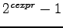

These are the types of range values that JAL 2.0 supports.
![[*]](footnote.png) .
.
Basic types can be extended using
the token [*cexpr] preceded by token type. Being type one of the following
built-in types: BIT, BYTE or SBYTE.
For BYTE and SBYTE, this means the variable will be defined as an integer using cexpr bytes.
Example:
WORD is simply shorthand for BYTE*2 DWORD is simply shorthand for BYTE*4
If type is BIT, the definition changes. A BIT variable, as defined in JAL, is really of type boolean. When assigned any non-zero value, it takes on the value of 1.
Using the [*cexpr], the definition changes to be more like a C bit field: assignment is masked.
We can create a 'nibble-like' grouping of bits with range 0 to (), i.e.: with 2 bits we can count to 3 ( 0b11 )
Example:
VAR BIT*2 cc
-- when assigning to cc, the internal
-- compiler assignment is:
cc = (value & 0x03) -- mask 2 least significative bits
-- remember 0x03=0b00000011